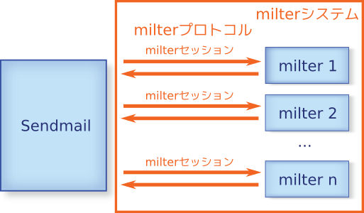
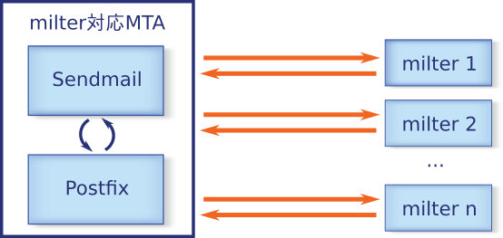
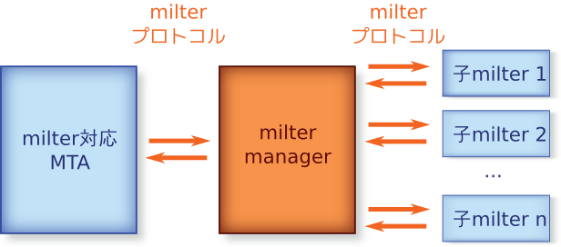

| milter managerリファレンスマニュアル |
|---|
milter managerを導入することによって得られる以下のメリットの 理由を説明します。
milter管理コストを減らすことができる
milterを柔軟に組み合わせることができる
milterに関する知識がない読者でも読み進められるようにmilterの 説明からはじめます。
milterとは m ail f ilter の略で、Sendmailが開発したメー ルフィルタプラグインの仕組みです。milterを使うことにより、 Sendmail本体を変更せずに、迷惑メールフィルタやウィルスチェッ クなどの機能をSendmailに組み込むことができます。また、一度に 複数の機能を組み込むことができるため、機能を組み合わせること で、より効果的なメールフィルタ機能を実現できます。
Sendmailとmilterの関係を図示して整理する前に、用語の整理をし ます。
「milter」という単語は、「メールフィルタプラグインの仕組み」 という意味以外にも、「メールフィルタプラグイン」という意味で も使われます。ここでは、混乱を避けるために以下のように使い分 けます。
milter: メールフィルタプラグイン
milterシステム: メールフィルタプラグインの仕組み
milterはSendmailとは別プロセスで動作し、milterとSendmailは独 自のプロトコルで通信を行います。このプロトコルのことを 「milterプロトコル」と呼ぶこととします。また、Sendmailが milterに接続し、milterプロトコルで通信を行い、milterとの接続 を切断するまでを「milterセッション」と呼ぶこととします。
これらの用語を用いたSendmailとmilterの関係は以下の通りです。

Sendmailがmilterシステムを提供してから、多くのmilterが開発さ れています。 <URL:https://www.milter.org/> というサイトでは 登録されているmilterを探すことができます。2008年12月時点では 62個のmilterが登録されています。milter.orgに登録されていない milterも多くあり、実際には100以上のmilterが開発されていると 思われます。例えば、以下のようなmilterです。
ウィルス対策用のフリーソフトウェアである ClamAV を利用するための milter（ClamAVに同梱） |
|
総合的なメールの内容検証を行うフリーソフトウェアである amavisd-new を 利用するためのmilter |
|
迷惑メールチェックを行うフリーソフトウェアである SpamAssassin を 利用するためのmilter |
また、新しい迷惑メール対策をmilterとして実装する場合も多く、 これからもmilterは増えていくと思われます。
もともと、milterシステムはSendmail専用の仕組みでしたが、 Postfixもバージョン2.3からmilterシステムのサポートを始めまし た。これにより、SendmailでもPostfixでも利用可能なメールフィル タを作成することができるようになり、milterの再利用性が向上し ました。

SendmailとPostfixのようにmilterシステムをサポートしているMTA であれば、MTAによらずmilterを利用できますが、milterを登録する 方法やmilterの設定方法はMTA毎に異なります。せっかくSendmailと Postfix間で同じmilterを利用できるようになったのですが、効率的・ 効果的にmilterを組み合わせるノウハウは共有できません。
迷惑メール対策手法は数多く考案されています。しかし、ある手法 1つですべての迷惑メールに対応できるわけではないため、複数の手 法を組み合わせて対応する必要があります。そして、多くの手法は なんらかの欠点を抱えています。例えば、誤検出はないが検出率が 低い、検出率は高いが処理時間が長い、検出率は高いが負荷が大き いなどです。
現在のように様々な種類の迷惑メールが大量に送信されているイン ターネット上では、手法の長所を活かしつつ、欠点を補うように利 用する必要があります。
手法は大きく接続ベース手法と内容ベース手法に分けられます。接 続ベース手法は、メールの内容は使わず、接続元ホストや差出人、 宛先などの情報で迷惑メールかどうかを判断する手法です。内容ベー ス手法はメールの内容を解析して迷惑メールかどうかを判断する手 法です。
接続ベース手法は検出率もよく、内容ベース手法よりも負荷が軽い ことが多いです。しかし、Gmailなどのような普通のメールサーバか ら送信されている迷惑メールの多くは検出することができません。 しかし、内容ベース手法を用いることにより、接続ベース手法を回 避した迷惑メールを検出することが可能です。
このような手法の特徴を反映して、2008年12月時点では以下のよう な迷惑メール対策が主流になっています。
できるだけ接続ベース手法で迷惑メールかどうかを検出
接続ベース手法では検出できなかった迷惑メールを内容ベー ス手法で検出
接続ベース手法は、メールを再送させることにより迷惑メール送信 者からきたメールかどうかを判断するGreylistingや、迷惑メール送 信者データベースに載っているかどうかで判断するブラックリスト 方式などがあります。商用製品のブラックリスト方式では独自のデー タベースを利用することが多くあります。フリーソフトウェアでの 実装ではDNSBLと呼ばれるDNSのインターフェイスを利用したデータ ベースを利用することが多いです。また、データベースを使用せず、 数種類の正規表現で迷惑メール送信者を検出する S25R （Selective SMTP Rejection）という手法もあります。
GreylistingやDNSBLを用いる場合は、メールの再送やネットワーク 通信が行われるため、負荷は高くないもののメールの遅延や処理時 間の増加が起こりえます。そのため、明らかに怪しくない送信者や ほとんど怪しくない送信者の場合はGreylistingやDNSBLを省略する ことにより、メールの遅延や処理時間の増加を抑えることができま す。
S25Rは、負荷も軽く処理時間も短く検出率もよく優秀な方法なので すが、誤検出を救済する手段がない、ホワイトリストをメンテナン スする必要があるといった欠点があります。一方、Greylistingで は一見怪しい送信者でもメールを再送してくれば、自動的に一定期 間ホワイトリストに登録するので、メンテナンスのコストはありま せん。
これらの手法の長所を活かしつつ、欠点を補いながら利用するため には以下のような利用方法があります。
S25Rで迷惑メール送信者か判断
迷惑メールと判断: DNSBLで迷惑メール送信者か判断
迷惑メールと判断: Greylistingで迷惑メール送信者か判断
メールが再送された: 迷惑メール送信者ではないと判断
メールが再送されない: 迷惑メール送信者と判断
迷惑メールではない: Greylistingを省略
迷惑メールではない: DNSBL/Greylistingとも省略
この方法では、S25RとDNSBLで怪しいと判断された接続に対しての みGreylistingを適用します。そのため、迷惑メール送信者以外か らのメールに対して再送要求をして配送遅延するという欠点が起き る確率を減らしています。また、S25Rで必要とされるホワイトリス ト管理などのメンテナンスはGreylistingで自動的に行われるため、 S25Rの欠点といえるメンテナンスコストを解消することもできます。
このように、それぞれの手法は組み合わせ方を工夫すれば、より効 率的に利用することができます。
迷惑メール対策の手法はmilterとして実装されています。それでは、 milterを効率的に組み合わせるためにはSendmail、Postfixにどのよ うな設定を行えばよいでしょうか。
Sendmail、Postfixともに、milterを適用する設定を行うと、すべて のメールに対してmilterが適用されます。そのため、前述のように 特定の条件のときのみmilterを適用するということはできません。 [1]
また、Sendmailではmilter毎に接続に失敗した時のアクションやタ イムアウト時間の設定ができるのに対して、Postfixではmilter全体 の設定となります。
milterはすでに多くの実装が開発されているという点、複数のMTA で迷惑メール対策手法の実装が共有できるという点で有用です。し かし、MTAでmilterの適用を柔軟に設定できないことやMTA間での設 定方法の違いから、そのような利点を活かしきれていません。
そのようなmilterの利点をより活かすためのフリーソフトウェアが milter managerです。
milter managerは複数のmilterを管理するmilterです。 milter managerには複数のmilterを登録することができ、 milter managerに対するmilterセッションは登録された複数の milterに転送されます。milter managerに登録されたmilterのこと を「子milter」と呼ぶこととします。
つまり、milter managerは1種のプロキシとして動作します。MTAか ら見ると、milter managerは1つのmilterです。一方、子milterか ら見ると、milter managerからはMTAのように見えます。

このような構成にすることで、各MTA毎に異なっていたmilter管理 部分をmilter managerの層で行えます。milter managerは以下のよ うにmilter管理機能を強化する機能を提供します。
milter検出機能
柔軟なmilterの適用機能
前者は「milter管理コストを減らすことができる」というメリット につながり、後者は「milterを柔軟に組み合わせることができる」 というメリットにつながります.
milter managerのこの2つの機能により、milterの利点をより活かす ことができます。
milter managerはRubyインタプリタを内蔵しています。Rubyは読み やすい文法と柔軟性を兼ね備えた本物のプログラミング言語です。
設定ファイルはRubyプログラムとして処理されるため、既存のMTAに 比べてより柔軟にmilterの設定を行うことができます。例えば、シ ステムにインストールされているmilterを検出して、動的にmilter の設定を行うことができます。つまり、milter managerの設定を行 わなくても、milterの設定を変更するだけで、milter manager側で それを検出して対応できるということです。
現在のところ、Ubuntu上でパッケージからインストールしたmilter、 FreeBSD上でportsからインストールしたmilterを使っている場合に おいては、設定ファイルを一切変更する必要はありません。milter をインストールすれば、milter managerが検出し、利用します。詳 しくは インストール を見てください。
設定ファイルがRubyプログラムになるため、MTAでmilterを登録する 場合よりも難しくなるのではないかという意見があります。前述の 通り、Rubyは読みやすい文法を提供するプログラミング言語なので、 通常に使用している限りは難しくなることはありません。 [2]
例えば、接続ソケットを指定する場合は以下のように設定しますが、 この書式はPostfixの設定ファイルでの書式（「設定項目 = 値」） とほとんど変わりません。
manager.connection_spec = "inet:10025@localhost"
また、設定ファイルを直接編集しなくても設定を変更できるWebイン ターフェイスも提供するため、柔軟なだけではなく、より簡単に設 定を行うことができます。（次のリリースから収録予定）
MTAの設定では、milterは適用するか適用しないかのどちらかの選 択肢しかありません。特定の条件のみmilterを適用するということ ができません。
milter managerは処理の途中にいくつかチェックポイントを用意し ています。このチェックポイントに必要な処理を組み込むことによ り、特定の条件のときのみmilterを適用する、ということができま す。
これにより、S25Rの結果から動的にmilterを適用するかどうかを判 断することができます。
milter managerを間に入れることにより、多少、パフォーマンス面 での影響があります。しかし、その影響はとても小さく、子milter の処理に比べればほとんどないといえます。そのため、milter managerがシステムのボトルネックになることはないでしょう。
また、milter managerに登録された子milterは特定の条件のときの み実行することができます。つまり、必要の無い場合は子milterを 実行しません。一方、MTAにmilterを直接登録すると、登録されたす べてのmilterが毎回実行されます。milterシステム全体の処理時間 は、実行する総子milter数が減ることにより、milter manager導入 前とほとんど同じ、あるいはより短くなります。
milterというMTAにメールフィルタを組み込む仕組みがある
milterにより迷惑メール対策手法やウィルスチェック機能を実 現できる
SendmailとPostfixがmilterをサポートしている
迷惑メール対策手法は一長一短あり、短所を補いながら長所を 活かすように利用することで、より効果をあげることができる
milterには利点と欠点がある
利点:
MTAが異なっても利用できる
すでに多くの実装がある
欠点:
MTAとmilterの設定が分散しているため、連携させる設定 が面倒である
MTAがmilterを効果的に組み合わせる方法を提供していな い
milter managerを用いることにより、milterの利点をより活か し、欠点を解消することができる
[1] Postfixでは、milterではなく、 アクセスポリシー委譲 の仕組 みを使うことによりS25Rで怪しいと判断した場合のみGreylistingを 適用するということができます。
[2] 少なく とも、Sendmailの設定よりは難しくなりません。